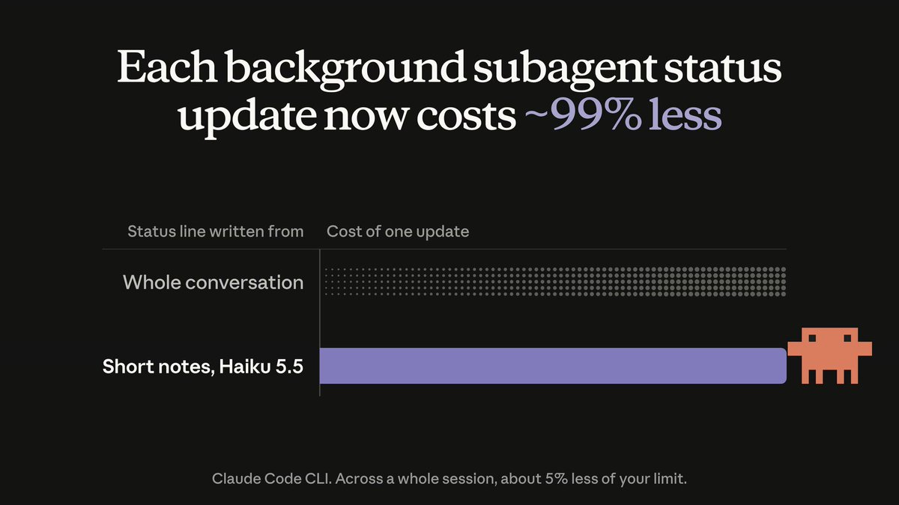

Проверяемые изменения, переносимый контекст и ограниченное делегирование: двенадцать практик для работы с агентами.
1–8 ноября12 приёмов3 на заметку
О чём говорят
На этой неделе практики сходятся вокруг проверки результата и состояния вне беседы. Один агент делегирует с явными границами, другой получает wiki для продолжения работы, а проверка становится частью самой задачи. Небольшие команды полезны, когда у них понятны ограничения.
Главные приёмы недели
01
Делегируйте задачи с чёткими границами и проверяйте diff
Когда основной агент передаёт работу subagents, нужно проверить границы задачи и получившиеся изменения. Автор не описывает конкретную ошибку прежней попытки.
→
Решение автора
Команда держит долгие сессии для каждого проекта. Opus передаёт всю работу DeepSeek subagents, строго задаёт scope, требует подтверждение выполненной работы и затем просматривает diff.
Что даёт приём: Границы задачи задаются до выполнения, а результат проверяется по подтверждениям и изменениям кода. Это описанный порядок контроля; величину выигрыша автор не приводит.
Как попробовать и что проверить
Для проверки подхода предлагаем выбрать задачу в своём проекте и поручить Opus делегировать её DeepSeek subagent с явными границами.
Попросите подтверждение выполненной работы вместо одного пересказа результата; затем просмотрите diff.
Измерьте в своём эксперименте число выходов за scope и число правок после просмотра diff. Это предложенная проверка редакции.
Ограничение: Автор сообщает о хорошем опыте, но не приводит сравнительных замеров, точного prompt и настроек моделей.
Если subagent читает больше изображений, чем помещается в один запрос, старые изображения удаляются. Он считает, что ещё не читал их, и открывает повторно.
→
Решение автора
Lydia Hallie предлагает временный обход: попросить Claude распределить изображения так, чтобы каждый subagent прочитал не больше 20.
Что даёт приём: Это обход описанного автором цикла повторного чтения; его результат стоит проверить в своей сессии.
Как попробовать и что проверить
Адаптация редакции: для задачи с большим числом изображений заранее разделите их на партии максимум по 20.
Передайте Claude правило: каждый subagent читает только свою партию и возвращает результат её разбора.
Измерение, адаптация редакции: посчитайте повторные открытия одних и тех же изображений в trace и число разобранных изображений.
Ограничение: Это временный обход конкретной ошибки. Автор сообщила, что исправление ожидается в начале следующей недели; его выпуск здесь не проверен.
При смене harness нужна опора на знания вне прежней беседы.
→
Решение автора
Каждый агент постепенно собирает wiki. Matt использует её, чтобы отбрасывать историю беседы и при необходимости менять harness; агенты также знают о его skill pack.
Что даёт приём: Wiki хранит знания отдельно от истории. Автор связывает с ней возможность сбрасывать беседу и менять harness.
Как попробовать и что проверить
Адаптация редакции: выберите одну предметную область проекта и поручите агенту вести по ней wiki с решениями и текущим состоянием.
Адаптация редакции: начните новую беседу и передайте ей wiki; при необходимости отдельно подключите используемые skills.
Измерение, адаптация редакции: дайте новой беседе несколько контрольных вопросов о решениях проекта и посчитайте ответы, которые потребовали возврата к старой истории.
Ограничение: В посте нет структуры wiki, правил обновления и замеров переноса контекста. Предложенные шаги проверки принадлежат редакции.
При работе через агента одной оценки читаемости кода недостаточно: нужно понимать, как проверить поведение изменяемого модуля.
→
Решение автора
Matt предлагает проектировать модули так, чтобы их можно было тестировать и проверять независимо. Названия в коде должны совпадать с предметным языком человека, который описывает изменения.
Что даёт приём: Независимая проверка даёт агенту способ исследовать поведение модуля. Общий предметный язык связывает формулировку задачи с именами в коде.
Как попробовать и что проверить
Адаптация редакции: выберите модуль, который агент регулярно меняет, и найдите способ проверить его поведение отдельно.
Адаптация редакции: устраните препятствие для этой проверки и сопоставьте имена функций и сущностей с языком задач команды.
Измерение, адаптация редакции: поручите агенту небольшое изменение и зафиксируйте, удалось ли проверить модуль отдельно и какие зависимости пришлось запускать.
Ограничение: Пример со 100% test coverage иллюстративный. Пост не доказывает, что агенту требуется нулевое время на понимание кода или что сложность и читаемость никогда не влияют на результат.
После изменения кода нужно определить, как подтвердить его работу в реальной среде. Одного написанного изменения для этого недостаточно.
→
Решение автора
Matt использует prompt «How do we make this change fully verifiable?». По его описанию, агент ищет способы проверить изменения, вплоть до реальных сервисов и кликов во frontend.
Что даёт приём: Вопрос делает способ проверки явной частью задачи агента. Примеры автора охватывают проверку вне текста кода.
Как попробовать и что проверить
Задайте агенту вопрос: «How do we make this change fully verifiable?»
Адаптация редакции: выберите из предложенных проверок те, которые подтверждают нужное поведение; внешние регистрации и действия согласуйте отдельно.
Измерение, адаптация редакции: перечислите заявленные поведения и отметьте, для скольких есть результат выполненной проверки.
Ограничение: Автор сообщает о личном улучшении качества без измерений и сравнительного эксперимента. Вопрос сам по себе не гарантирует полноту проверки и не разрешает агенту внешние действия.
Автор описывает задачу борьбы с повторением кода и неудачными абстракциями при AI-разработке; исходные примеры кода не приведены.
→
Решение автора
Автор использует prompt «deepen modules and simplify interfaces», запускает такой проход на каждом PR и ночную автоматизацию для отложенного обслуживания.
Что даёт приём: По личному опыту автора, запрос направляет агента на устранение дублирования и централизацию основной функциональности. Он сообщает об улучшении согласованности, исправлении ошибок и сокращении кода.
Как попробовать и что проверить
Используйте формулировку автора: «deepen modules and simplify interfaces».
Адаптация редакции: ограничьте проход одним изменяемым модулем и попросите показать, какие детали скрывает интерфейс и какое дублирование устранено.
Измерение, адаптация редакции: сопоставьте поведение до и после, число точек вызова и объём дублирования; проверьте результат тестами, а сокращение строк учитывайте отдельно.
Ограничение: Это личный опыт без сравнения и измерений. Меньше строк не доказывает улучшение дизайна; prompt не гарантирует исправления ошибок. Автор связывает идею с книгой John Ousterhout Philosophy of Software Design.
Каждые 30 секунд работающий фоновый subagent обновляет строку статуса. Раньше для каждого обновления заново читалась вся его беседа.
→
Решение автора
Теперь Haiku 5.5 пишет статус по коротким заметкам. Сам subagent сохраняет собственную модель. По заявлению ClaudeDevs, одно обновление обходится примерно на 99% дешевле.
Что даёт приём: Сокращение относится к служебной операции обновления статуса. Автор отдельно сообщает примерно о 5% меньшем расходе лимита в сессиях с фоновыми subagents и примерно о 6% большем числе prompts.
Как попробовать и что проверить
Обновите Claude Code до v2.1.316 или новее; автор сообщает о доступности для большинства пользователей Pro, Max и Ultra и всех пользователей Team и Enterprise.
Адаптация редакции: выполните привычную задачу с фоновым subagent и проверьте, что его модель не изменилась из-за механизма генерации статуса.
Измерение, адаптация редакции: сравните расход лимита на сопоставимых задачах; отдельно учитывайте обновления статуса и работу самого subagent.
Ограничение: 99% относится к стоимости одного обновления статуса, а не всей сессии. Проценты расхода лимита — заявление автора, методика и выборка не приведены.

Схема автора сравнивает полную беседу с short notes. Около 99% относится к одному status update, а не ко всей сессии.
До описанного изменения клиент повторно отправлял полную беседу на каждом ходе.
→
Решение автора
Message threads доступны в публичной бете Messages API: сервер хранит беседу между ходами, а клиент передаёт новые сообщения и ID предыдущего сообщения.
Что даёт приём: Перенос хранения беседы на сервер позволяет не отправлять всю историю повторно. По сообщению автора, Claude начинает отвечать раньше.
Как попробовать и что проверить
Адаптация редакции: выделите тестовую многоходовую беседу и зафиксируйте текущий объём запросов.
Инженерный паттерн: храните ID предыдущего сообщения и передавайте его с новыми сообщениями; точные поля и вызовы нужно сверить с документацией API.
Измерение, адаптация редакции: сравните размер запросов и время до начала ответа при одинаковой беседе с полной историей и с thread.
Ограничение: Это публичная бета. В посте нет схемы запросов, правил хранения, обработки ветвлений и количественных замеров; карточка описывает инженерный паттерн, а не готовый рецепт интеграции.
Для запуска репозитория облачной сессии нужны зависимости, сетевой доступ и API-ключи.
→
Решение автора
По сообщению ClaudeDevs, Claude определяет нужные зависимости, сетевой доступ и API-ключи, затем сохраняет окружение для следующего запуска. Это описано для Pro, Max и Ultra.
Что даёт приём: Сохранённое окружение можно использовать в следующей сессии. Автор утверждает, что ключи хранятся безопасно и Claude их не видит.
Как попробовать и что проверить
Адаптация редакции: выберите репозиторий с проверяемой командой запуска и откройте облачную сессию Claude Code.
Инженерный паттерн: проверьте определённые зависимости и доступы, настройте окружение и повторно откройте репозиторий; конкретные настройки в посте не описаны.
Измерение, адаптация редакции: сравните время до успешного запуска и число ручных действий в первой и повторной сессиях.
Ограничение: В посте нет формата конфигурации, интерфейса выдачи доступов, списка поддерживаемых окружений и модели защиты ключей. Заявление о невидимости ключей принадлежит автору; здесь оно независимо не проверено.
У автора агент работает на удалённом сервере, а браузеры находятся на desktop и ноутбуке.
→
Решение автора
OpenCode Browse поддерживает размещение агента и браузеров на разных машинах. Автор реализовал это для своей удалённой среды и использует управление браузерами desktop и ноутбука.
Что даёт приём: Агент и браузер не обязаны работать на одной машине. Это даёт конкретную схему применения для разработки с удалённым сервером.
Как попробовать и что проверить
Для проверки подхода предлагаем изучить настройку соединения между удалённым агентом и локальным браузером в OpenCode Browse.
После настройки поручите удалённому агенту небольшую браузерную задачу на своём компьютере.
Зафиксируйте, выполнена ли задача, и число потерянных соединений за запуск. Это измерение редакции, а не результат автора.
Ограничение: Локальный пост подтверждает топологию и личное использование, но не раскрывает настройку соединения, разрешения и требования доступа.
Claude desktop хранит задачи и worktrees на компьютере. Неактивные задачи и неиспользуемые worktrees можно удалить через интерфейс управления хранилищем.
→
Решение автора
Команда /storage показывает, сколько места занимает Claude, и позволяет очистить неактивные задачи и неиспользуемые worktrees.
Что даёт приём: Команда связывает просмотр расхода диска с очисткой конкретных категорий данных внутри desktop app.
Как попробовать и что проверить
Откройте /storage в Claude desktop и посмотрите объём занятого места.
Адаптация редакции: проверьте предложенные к очистке задачи и worktrees и выберите только те, которые больше не нужны.
Измерение, адаптация редакции: сравните показанный объём занятого места до очистки и после неё.
Ограничение: Автор не приводит объём освобождённого места и не описывает возможность восстановления удалённых данных. Команда относится к desktop app.
Останавливайте цикл без прогресса и учитывайте повтор при resume
watch: полный разбор IssueBot даёт самостоятельные механизмы stall exit, идемпотентного resume и ablation устаревших компонентов harness. Автор проверил graph на подставных командах, а на реальном репозитории не запускал. Сохраняем как подробный инженерный reference, без обещания готового запуска.
ClaudeDevs связывает автоподключение с доверием к Claude как issuer. Протокол, параметры валидации и отзыв доступа не раскрыты: перед настройкой нужна документация.
Thariq предлагает дать harness мощный API и один code-mode tool вместо множества мелких MCP tools. Это направление дизайна, без показанной реализации и проверки.
Выбрать одну задачу и делегировать её с границами, proof of work и проверкой diff.
ПН
Проверить перенос знаний через wiki и независимую проверку одного модуля.
СР
Как собран выпуск
Окно: 1–8 ноября 2026. Публикации X и авторские источники; практики адаптированы к backend/agent-разработке.
Тематический топ-60 проверен отдельно от собственных постов ключевых авторов. Второй проход искал guardrails, permissions, CI gates, восстановление и управление контекстом.
Отбор отличает подтверждённый принцип от готового запуска. Ограничения доступа и непроверенные детали отмечены в карточках.
Исходные цифры принадлежат авторам. Эксперименты редакции не являются замерами выпуска.